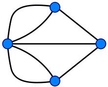
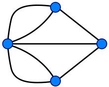
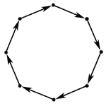

Простейшие понятие о графах. Представления графов в памяти, классические алгоритмы.
Введение
Теория графов — раздел математики и информатики, нашедший широкое применение в современных прикладных задачах. В первую очередь, это задачи поиска маршрута на картах, но её применение не ограничивается навигационными приложениями. Графы возникают там, где между данными существуют какие-либо нелинейные связи. Например, это могут быть компьютеры, соединённые в сеть. Или же это могут быть задачи, которые надо выполнить в каком-то порядке, причём некоторые задачи надо выполнять строго после каких-то других. Существуют алгоритмы, позволяющие вычислить оптимальный порядок выполнения таких задач.
История возникновения теории графов
Леонард Эйлер и задача о Кёнигсберских мостах
Родоначальником теории графов считается Леонард Эйлер. В 1736 году в одном из своих писем он формулирует и предлагает решение задачи о семи кёнигсбергских мостах, ставшей впоследствии одной из классических задач теории графов.
Издавна среди жителей Кёнигсберга (теперь Калининграда) была распространена такая загадка: как пройти по всем мостам, не проходя ни по одному из них дважды? Многие кёнигсбержцы пытались решить эту задачу как теоретически, так и практически, во время прогулок. Но никому это не удавалось, однако не удавалось и доказать, что это даже теоретически невозможно.
В 1736 году задача о семи мостах заинтересовала выдающегося математика, члена Петербургской академии наук Леонарда Эйлера, о чём он написал в письме итальянскому математику и инженеру Мариони от 13 марта 1736 года. В этом письме Эйлер пишет о том, что он смог найти правило, пользуясь которым легко определить, можно ли пройти по всем мостам, не проходя дважды ни по одному из них (в случае семи мостов Кёнигсберга это невозможно).
Для того, чтобы решить эту задачу, Эйлер сделал специальные обозначения. Каждую часть суши (остров или берег реки) он обозначил кружком на бумаге, а затем соединил линиями те кружки, между которыми существуют мосты. Такие обозначения подчеркивают, что в этой задаче фактическое расположение, форма, длина и другие свойства объектов не представляют интереса, важны только связи между ними. Такая картинка на бумаге или на экране компьютера называется графом. Кружки — это его вершины, а линии — рёбра. Размышляя над этой и другими картинками из кружков и линий, Эйлер пришел к следующим выводам о графах:
- Число нечётных вершин (вершин, к которым ведёт нечётное число рёбер) графа должно всегда быть чётно. То есть, просто не может существовать графа, который имел бы нечётное число нечётных вершин.
- Если все вершины графа чётные, то его можно начертить не отрывая карандаша от бумаги, при этом начинать можно с любой вершины графа и завершить его в ней же.
- Граф с более чем двумя нечётными вершинами невозможно начертить одним росчерком.
Граф кёнигсбергских мостов имел четыре нечётные вершины (т.е. все), следовательно, невозможно пройти по всем мостам, не проходя ни по одному из них дважды.

 

Проблема четырёх красок

Проблема четырёх красок — математическая задача, предложенная Гутри в 1852 году.
Выяснить, можно ли всякую расположенную на сфере карту раскрасить четырьмя красками так, чтобы любые две области, имеющие общий участок границы, были раскрашены в разные цвета.
Иначе говоря, показать что хроматическое число плоского графа не превосходит 4.
О доказательствеК. Аппель и В. Хакен доказали в 1976 г., что так можно раскрасить любую карту. Это была первая крупная математическая теорема, для доказательства которой был применён компьютер. Несмотря на последующие упрощения, доказательство практически невозможно проверить, не используя компьютер. Поэтому некоторые математики отнеслись к этому доказательству с недоверием, что объяснялось не только использованием компьютера, но и громоздкостью описания алгоритма первых доказательств (741 страница), впоследствии были предложены более компактные алгоритмы и скорректирован ряд ошибок. Проблема четырех красок является одним из известнейших прецедентов неклассического доказательства в современной математике.
Определения теории графов
Граф — конечное множество вершин, природа которых не важна, и конечно множество рёбер, соединяющих между собой какие-либо вершины.
Графы могут быть ориентированными и неориентированными. Если в рамках задачи по рёбрам можно перемещаться в обоих направлениях, то граф называется неориентированным. Если же по каждому ребру можно пройти только в одну сторону, то граф ориентированный. В таком случае рёбра обычно обозначаются стрелками, а не просто линиями.

Пример ориентированного графа
Иногда бывает полезно связать с ребрами графа какие-то числа. Это могут быть длины дорог или плата за проезд, если граф моделирует карту какой-то местности. В таком случае граф называется взвешенным, а сами числа — весами.

Граф, в котором каждая пара вершин соединена ребром, называется полным. Обозначение: Kn – граф, состоящий из n вершин и ребер, соединяющих всевозможные пары этих вершин. Такой граф можно представить как n–угольник, в котором проведены все диагонали.
Ниже приведены полные графы с числом вершин от 1 до 8 и количества их рёбер.
| K1: 0 | K2: 1 | K3: 3 | K4: 6 |
|---|---|---|---|
 |
 |
||
| K5: 10 | K6: 15 | K7: 21 | K8: 28 |
 |
 |
 |
Степенью вершины называется число ребер, которым принадлежит вершина (число рёбер с концом в данной вершине).
Дополнением данного графа называется граф, состоящий из всех ребер и их концов, которые необходимо добавить к исходному графу, чтобы получить полный граф.
Граф, который можно представить на плоскости в таком виде, когда его ребра пересекаются только в вершинах, называется плоским.
Многоугольник плоского графа, не содержащий внутри себя никаких вершин или ребер графа, называют его гранью.
Понятия плоского графа и грани графа применяется при решении задач на «правильное» раскрашивание различных карт.
Путем от вершины A до вершины X называется последовательность ребер, ведущая от A к X, такая, что каждые два соседних ребра имеют общую вершину, и никакое ребро не встречается более одного раза.
Циклом называется путь, в котором совпадают начальная и конечная точка (т.е. можно «ходить по циклу» — «ходить по кругу»).
Простым циклом называется цикл, не проходящий ни через одну из вершин графа более одного раза.
Длиной пути, проложенного на цикле, называется число ребер этого пути.
Две вершины A и B в графе называются связными (несвязными), если в нем существует (не существует) путь, ведущий из A в B.
Граф называется связным, если каждые две его вершины связны; если же в графе найдется хотя бы одна пара несвязных вершин, то граф называется несвязным.
Специальным типом графов является дерево. В дереве выделяется особая вершина — корень, которая соединена рёбрами с другими вершинами — своими потомками, которые в свою очередь могут иметь своих потомков. Вершина, не имеющая потомков, называется листом. Наглядный пример дерева — иерархия файлов и папок в файловой системе компьютера или систематика живых организмов
Если не выделять особым образом корень, то дерево — это просто любой связный граф, не имеющий циклов
Представление графов в памяти
Чтобы решать задачи, связанные с графами, нужно сначала научиться сохранять его в памяти, а ещё лучше — сохранять оптимально. Существует несколько способов сделать это, и для каждой конкретной задачи оптимальным будет свой способ.
Матрица смежности
Самый простой способ сохранить граф в памяти — матрица смежности. Нарисуем таблицу, которая чем-то напоминает таблицу умножения: в первой строчке и в первом столбце будут стоять номера (или любые названия) вершин, а на пересечении столбца и строки будем ставить, например, 1 если между этими вершинами есть ребро и 0 если нет. Кроме 1 и 0 можно ставить, например, вес ребра, а для обозначения отсутствия ребра — просто очень большое число. Какой именно вариант использовать, зависит от каждой конкретной задачи. Также задача определяет, что ставить на диагонали получившейся матрицы.


Граф и его матрица смежности.
Матрица смежности элементарно реализуется в большинстве языков программирования, достаточно лишь объявить двумерный массив. Посмотрим, как сделать это на языке Python. В большинстве задач на тему «графы» формат входных данных описан так:
В первой строке входного файла заданы числа $N$ и $M$ через пробел — количество вершин и рёбер в графе, соответственно ($1 \le N \le 100$, $0 \le M \le 10 000$). Следующие $M$ строк содержат по два числа $u_i$ и $v_i$ через пробел ($1 \le u_i, v_i \le N$); каждая строка означает, что в графе существует ребро между вершинами $u_i$ и $v_i$. Рёбра нумеруются в том порядке, в котором они даны во входном файле, начиная с единицы.
Напишем функцию, считывающую граф как матрицу смежности:
def load_adjacency_matrix():
"""
Эта функция загружает из входного файла граф и возвращает его матрицу смежности (adjacency matrix)
"""
# Сначала считываем количества вершин и рёбер
vertices, edges = [int(x) for x in input()]
# Создаём матрицу смежности (двумерный массив) и инициализируем её нулями
A = [[0]*vertices for i in range(vertices)]
for i in range(edges):
# И считываем все рёбра. Вычитаем 1, так как массивы в Python нумеруются с нуля
u, v = [int(x) - 1 for x in input()]
A[u][v] = 1
# Если граф неориентированный, то надо добавить ребро в обратную сторону:
# A[v][u] = 1
# Последний шаг --- вернуть построенную матрицу
return A
Список смежности
Этот способ тоже простой, но он значительно оптимальнее матрицы смежности во многих случаях. Для того, чтобы сохранить в памяти граф, заведём для каждой вершины свой список (для удобства все списки можно хранить в одном массиве), и в эти списки занесём номера вершин, в которые ведут рёбра из данной.
Посмотрим, как это пишется на Python с тем же форматом входных данных:
def load_adjacency_list():
"""
Эта функция загружает из входного файла граф и возвращает его списки смежности
"""
vertices, edges = [int(x) for x in input()]
# Создадим N пустых списков
L = [[] for i in range(vertices)]
for i in range(edges):
u, v = [int(x) - 1 for x in input()]
# Запоминаем, что из вершины u можно попасть в v:
L[u].append(v)
# Если граф неориентированный:
# L[v].append(u)
# Возвращаем результат
return L
Другие способы
Существуют и другие способы хранения графа в памяти, например, матрица инцидентости, которая удобна при использовании методов линейной алгебры в задачах на графах, или списки рёбер, но практическое применение в задачах обычно находят описанные выше два способа.
Основные задачи теории графов
Обходы графа
Часто требуется обойти все вершины графа в определённом порядке, например, для проверки его на связность или упорядочения задач при планировании (топологическая сортировка графа). Существует два стандартных метода обхода графа — обход в глубину и обход в ширину.
Обход в глубину (DFS)
Обход в глубину можно описать так: представьте, что вы в лабиринте. Идите всегда прямо, а на всех развилках выбирайте самый левый путь. Упёршись в тупик, возвращайтесь обратно до последней развилки и выбирайте следующий путь слева. Продолжайте, пока не обойдёте весь лабиринт.
Обычно алгоритм DFS реализуется с помощью списков смежности и рекурсии. Требуется лишь создать функцию dfs(v), которая будет просматривать всех соседей вершины v и запускать себя для каждого из них. Единственное, что требуется, кроме этого — список уже посещённых вершин, иначе функция может войти в бесконечный цикл.
Напишем функцию dfs на языке Python с использованием списков смежности:
# Загрузка графа из файла (пример)
g = load_adjacency_list()
# Создадим множество посещённых вершин, используя эффективную реализацию множеств в Python
visited = set()
def dfs(v):
"""
Эта функция рекурсивно обходит всех соседей вершины v
"""
# Если эта вершина уже посещена, ничего делать не нужно
if v in visited:
return
# Запоминаем, что это вершина посещалась
visited.add(v)
# Здесь можно выполнять какую-либо полезную обработку вершины v, необходимую для решаемой задачи
# Перебираем всех соседей вершины v --- элементы списка смежности g[v]
for d in g[v]:
# Запускаем функцию dfs для каждого соседа
dfs(d)
Теперь достаточно запустить обход из стартовой вершины. Например, так: dfs(0).
Обход в ширину (BFS)
Обход в ширину можно наглядно представить себе так: в какой-то стартовой точке лабиринта разливается жидкость, и она начинает равномерно заполнять все его помещения, продвигаясь все дальше. При этом в каждый момент времени все точки края разливающейся воды находятся на одном расстоянии от начала.
Этот обход, как и обход DFS, можно применять для поиска путей в графах. Основное его отличие в том, что поиск не уходит сразу далеко от начала, а продвигается вглубь графа постепенно, неким «фронтом».
Его реализация немного сложнее, чем DFS. Для этого нам понадобится такая структура данных, как очередь. Очередь, как видно из названия, моделирует обычную очередь в магазине. Обычно это список, в которой можно класть элементы с одной стороны, а забирать — с другой. Обход в ширину хранит в очереди вершины, которые еще предстоит просмотреть.
# Загрузка графа
g = load_adjacency_list()
def bfs():
"""
Эта функция обходит граф "в ширину"
"""
# Множество посещённых вершин
visited = set()
# Очередь посещаемых вершин. Изначально надо посетить первую вершину
Q = [0]
# Пока очередь не пуста:
while Q:
# Достаем из очереди следующую вершину
v = Q.pop(0)
if v in visited:
# Если эта вершина уже просматривалась, пропускаем её
continue
# Запоминаем, что эта вершина посещалась
visited.add(v)
# Здесь можно обработать вершину v
# Перебираем всех соседей вершины v и добавляем их в очередь
for d in g[v]:
Q.append(d)
Поиск кратчайших путей
Очень часто требуется найти кратчайший путь между двумя вершинами во взвешенном графе. Очевидный пример — прокладка маршрута по карте. Для решения этой задачи существует большое количество алгоритмов, в числе которых алгоритм Флойда и алгоритм Дейкстры. Алгоритм Флойда является самым простым, но очень неоптимальным — его сложность $O(n^3)$. Алгоритм Дейкстры быстрее ($O(n^2)$ или $O(n \log n)$, в зависимости от реализации), но имеет некоторые ограничения.
Рассмотрим самый простой алгоритм поиска пути — алгоритм Флойда. Его преимущества состоят в том, что он реализуется очень легко, может работать с рёбрами отрицательного веса и одновременно находит кратчайшие пути между всеми парами вершин. Алгоритм Флойда — один из немногих алгоритмов, которые лучше работают с матрицей смежности, чем со списками рёбер. Алгоритм последовательно изменяет матрицу смежности, превращая её в матрицу кратчайших путей — в каждой клетке матрицы остаётся длина (сумма весов) кратчайшего пути между соответствующей парой вершин. Условие работы алгоритма — если между какой-то парой вершинам нет ребра, в исходной матрице смежности в этой клетке должна стоять «бесконечность», обычно это число, заведомо больше весов всех рёбер в данной задаче.
Алгоритм устроен так: для каждой вершины графа, пусть её номер будет $k$, просматриваются все пары вершин, пусть это $i$ и $j$. Если сумма текущей известной длины пути из $i$ в $k$ и из $k$ в $j$ меньше, чем из $i$ в $j$, то в клетке, соответствующей пути из $i$ в $j$, запоминаем длину пути через $k$, иначе ничего делать не требуется. Таким образом, алгоритм содержит три вложенных цикла, поэтому его сложность — $O(n^3)$.
Посмотрим, как реализовать этот алгоритм на Python:
# Константа "бесконечность"
INF = 1e6
# Загружаем матрицу смежности. Не забудьте изменить функцию так, чтобы в пустых клетках матрицы стояла "бесконечность", а не единица
A = load_adjacency_matrix_2()
def Floyd():
"""
Эта функция превращает матрицу смежности A в матрицу кратчайших путей
"""
# Перебираем все вершины. vertices --- количество вершин в графе
for k in range(vertices):
for i in range(vertices):
for j in range(vertices):
# Если путь из i в k плюс из k в j, короче, чем известный путь из i в j, запоминаем его
if A[i][k] + A[k][j] < A[i][j]:
A[i][j] = A[i][k] + A[k][j]
Этот алгоритм легко дорабатывается для случая, когда надо получить не только длины кратчайших путей, но и сами пути. Такую модификацию стоит проделать самостоятельно.
Алгоритм Дейкстры будет рассматриваться на зимней очной сессии.
Другие задачи
Другими классическими задачами теории графов являются, например, задача топологической сортировки и задача поиска наименьшего остовного дерева. Алгоритмы для решения этих задач также будут рассматриваться на зимней очной сессии.